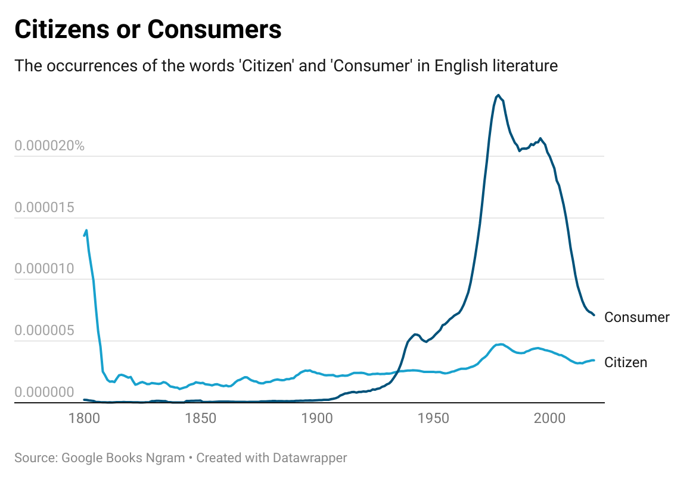

Consumer first; Citizen second
We have reached the final stage of the neoliberal fever dream. From housing, to media, to printers, to everything else. Get ready to own nothing; pay rent on everything.
In January of this year, just a few days after HP was slapped with yet another lawsuit for intentionally bricking printers using third-party ink cartridges, [1] The CEO of HP Inc., Enrique Lores, stated that the long-term objective of the company is to shift to a subscription-based offering for their hardware products. [2]
Our long-term objective is to make printing a subscription
[…] as we shift the business to a subscription, not only for printers, but for PCs and the rest of the products that we build […]
This intent is rationalized with the argument that this will be easier for the consumer… Get out your bullshit bingo cards, they are hitting us with one of the classics.
But Hewlett-Packard is far from the only company trying to shift its business model in this direction. They are actually quite late to the game when you consider the surrounding market.
Adobe spearheaded with their Creative Cloud
subscription, making perpetual software licenses obsolete.
No longer do you own a license to a certain software (version);
you are now paying rent for temporary access. Forever.
Or as long as you can afford it, lol.
In addition, Digital Rights Management (DRM) is in every kind of media now. Whether you are on Google Play, Amazon Audible/Kindle/Prime, Steam, or any other media platform, it doesn't matter if the button you press at checkout says «buy». You do not really buy anything; you are just paying to get access to a certain medium on a certain platform. It does not mean that you are allowed to export, download, or migrate those items because you do not own them. [3] If you lose access to your account, your account gets deleted or blocked, or if the platform itself ceases to exist, all those items «bought» may be gone. You are just renting. To state the obvious, the same goes for all streaming services.
Some other notable tech corporations have stated their intention to enter this mode of business: Ubisoft wants to make owning games obsolete, [4] and Microsoft seemingly intends to make owning a computer obsolete. [5] [19]
But how did we end up here? This is an issue that does not only affect digital ownership and the tech industry; it grows deeper than that. I'd argue that this is just one of the conclusions of our current mode of economics.
Let me digress.
Housing
The effects of the commodification of the housing market have made it apparent, especially to young people, that most of them will never be able to own their homes. Houses and apartments are first and foremost investment assets, not places to live in. This is hardly news to anybody, people have internalized the reality of being life-long renters to be granted the basic human right of shelter.
The problem is that the perversion of the free-market religion is reaching rather unexpected places with every year that we let it grow unchecked. Its roots have not just reached every corner of business; they have poisoned our minds too.
Homo economicus
In the first act of our religious economic journey, all citizens have been reduced to mere consumers. Today, in our economic commandments, there is no such thing as a citizen, a person, a mother, or anything of the sort. The only thing most closely resembling such concepts are workers and consumers.
Neoliberals generally have a very weird worldview of what makes a human. This strange thing, which neoliberal economics describes as a human being, is also referred to as Homo economicus. The Homo economicus behaves nothing like an actual human being would, yet our current economic theory is based on this definition of man. A famous joke, originally told by British economist Ely Devons, points out this fact beautifully. [6]
If economists wished to study the horse, they wouldn't go and look at horses. They'd sit in their studies and say to themselves, "what would I do if I were a horse?"
One of the most influential thinkers of classical liberalism, John Stuart Mill, admitted that this depiction was «an arbitrary definition of man», based on «premises which might be totally without foundation». He went on to justify this caricature by stating that no «political economist was ever so absurd as to suppose that mankind are really thus constituted». [7]
Yet here we are.
There is no society
Those absurd theories about human behavior have spread like cancer through the globalized world.

As Kate Raworth points out in her book «Doughnut Economics», since the 1970s, the use of the word «Consumer» has exploded in English literature. [8] The following quote by Justin Lewis, Professor of Communication at the Cardiff School of Journalism, Media and Culture, attempts to explain this change. [9]
Unlike the citizen, the consumer's means of expression is limited: while citizens can address every aspect of cultural, social and economic life… consumers find expression only in the market place.
In our holy economic models, there is no room for citizens or members of any community, there is only the self-interested, profit maximizing individual, who is constantly searching for personal gains over others. Led to believe that there may only be winners if there are also losers – and nobody wants to be a loser.
But this learned egotistical, and supposed rational behavior is ironically driving irrational decisions. This comes at the cost of the «consumer» themselves. The preference for owning one's own stuff, instead of sharing tools and resources with their community, exemplary demonstrates this irrationality.
Your neighbor has a fancy new lawn mower? Better get a new one too, preferably the more expensive model! You may use it only once a month, as does your neighbor, but why would you share that with anybody but your family? As Margaret Thatcher famously remarked: there is no such thing as a society outside the family. [10]
Who is society? There is no such thing! There are individual men and women and there are families [...]
Tragedy of the commons
This aversion to sharing resources with others has not always been that strong, but it is another key part of today's mainstream economics.
There are a few notable theories from the social sciences, namely the Tragedy of the commons, Prisoner's dilemma, and the Logic of Collective Action, which greatly influence our world today. At the center of those models is the Free-rider problem, which posits that sharing resources will eventually lead to degradation of the resource, because of the incentive to free-ride on the efforts of others.
Those theories, however, are quite controversial due to their limited applicability. While they may work in fixed empirical settings, they do certainly not work in most real-world scenarios, and thus are extremely dangerous to use as the foundation for policy. [11]
Some argue that addressing Free-rider problems must be done through centralized governance structures to manage any form of common pool resources, while on the other end of the spectrum, complete privatization and deregulation is the supposed solution to the degradation problem.
While both suggestions are problematic, the latter is the one that is a core ingredient in neoliberal economics. But to emphasize it again; The theories around the Free-rider problem are by themselves deeply flawed, so how is a supposed solution to them going to bring any benefit?
But most of the people in power, whether that being
politicians in parliament or citizens consumers
at the polls, still believe in neoliberal economics, and by extent,
in the deeply flawed theories underlying it.
Think Tanks
Today, we are led to believe that free-market fundamentalism is the only way of doing economics and that there is no alternative. Every day, when there is some discussion about the economy on TV, almost all the so-called experts calling in are members of a neoliberal think tank. They are quacks, paid by corporations and billionaires, and always on-call to preach the gospel of neoliberal economics. Actual academics don't get paid to call into TV shows just to protect capital interests and praise the status quo.
Those think tanks also do an outstanding job of
hiding their unscientific nature. They make themselves
sound like prestigious academic research groups, with
names like the Adam Smith Institute,
Institute of Economic Affairs, Manhattan Institute for Policy Research, and thousands more.
But all they really do is publish questionable research to make the
self-interested policy demands of the elite appear to be grounded in evidence.
[12]
With a nearly unlimited pool of money, they can manipulate political debates in the media,
persuade politicians with «academic» policy recommendations,
and offer university programs and continued education indoctrination programs for
federal judges,
[13]
just to name a few.
Planned Obsolescense
But let's get back to the lawn mower; this push towards individual consumption has its limits. How can a supplier of lawnmowers indefinitely grow its profits when everybody already has a lawnmower that works?
Well… by ensuring that the lawnmower does, in fact, not work after a while. By using cheap and low-quality components for essential parts of the product, the product is destined to fail within a relatively short time-frame, and it will soon enough be in need of repair or replacement. This practice is known as Planned Obsolescence. [14]
I've emphasized the word repair because an artificially shortened product lifetime may not directly lead to more sales if the item can be repaired by an expert. A key part of the play is missing; Products have to be assembled in a way that makes them difficult to repair independently. The manufacturer may then offer their official service centers to facilitate repair services.
To make the customer bring back the product to an official service center has a significant advantage. First, the product does not actually have to be repaired. Instead, a counter-offer can be made: 'Unfortunately, we are unable to repair the product because there are no spare parts available, but we can offer you 25% off our latest product.' Second, as Apple has taught us, it is also essential that the broken product is brought back to the manufacturer for another reason: to keep it off the market. [15] Just in case anyone ever figures out how to repair the broken items, it is better to put them into the shredder so they can never be repaired again.
Something really amuses me about Planned Obsolescence, the Eswazi anthropologist, Jason Hickel, pointed it out succinctly. [16]
We like to think of capitalism as a system that’s built on rational efficiency, but in reality it is exactly the opposite. Planned obsolescence is a form of intentional inefficiency.
Those anti-consumer business practices have provoked some
opposition from citizens consumers:
the movement for the right to repair.
Their demands have recently started to find their
way into legislation, in the EU as well as in the US.
But this is not the only obstacle anti-consumer businesses face today. All this constant consumption weighs heavy on the wallet of the consumer. The disparity of inflation, raising rents, healthcare costs and stagnating wages makes it harder to extract value from people through the olden tactics. Every purchase is an investment, and investments get harder to justify when there isn't any money left at the end of the month. Additionally, people will grow tired of products that consistently break a week after the warranty expires.
But there is a way to turn a single sale into a perpetual cash flow with a very low entry cost for the consumer. Enter the phase of the subscription model.
Subscription Models
The beauty of subscription models is that the customer no longer owns anything of value. There is no inherent interest in keeping any product repairable. Because the decision whether to upgrade a product, or to keep the still functioning older one, no longer lies in the hands of the consumer.
One always has to get the upgrade immediately, even if the previous revision still worked. And if the upgrade is significant enough, then the recurring fee is adjusted accordingly. If the product becomes subpar and outdated, then the recurring fee stays the same.
Once a significant market power can be established, either with monopolistic mergers or by artificially increasing switching costs, the consumer's ability to stop using a subscription product can be further weakened.
Subscriptions not only hide the true costs of products, they can also be turned into a highly profitable wealth extraction scheme, where prices can be increased, and terms changed, with esoteric reasoning. This mode of business is starting to look more similar to that of a rent-seeking parasite.
Conclusion
Generally, as we are closing in on a future where natural resources become harder to extract, and where products improvements get less significant with every new revision, it is to be expected that economic growth must come from somewhere else. Simply selling new and «improved» products may not work forever. At this point, we should ask ourselves, if a system that requires unlimited exponential growth, really should be the way forward. Because most it does is accelerate inequality between, and even within, nations.
In an article from 2020, ecological economist Beth Stratford argues that, under increasing resource constraints, capital may have to shift to more aggressive rent-seeking behavior to sustain their rates of growth. [17] I believe that we are observing this shift, and the tech industry seems to be at the forefront of it.
I can't help but wonder what the future holds in store for us. When more wealth generation (i.e., innovation of new technologies, products) is being replaced by wealth extraction (i.e., companies purchasing existing assets to milk them for profit, rent-seeking monopolies). Then we have truly found our way back to Feudalism.
Almost.
At least under serfdom, Europe's peasants had secure access to land; now we are just granted temporary leases on it. [18]
References
- [1]
- Scharon Harding, HP sued (again) for blocking third-party ink from printers, accused of monopoly, Ars Technica, 2024, https://arstechnica.com/gadgets/2024/01/hp-sued-again-for-blocking-third-party-ink-from-printers-accused-of-monopoly/
- [2]
- CNBC Television, HP CEO Enrique Lores on PC market trends: 'Significant tailwinds' will continue to drive demand, Youtube, 2024, https://www.youtube.com/watch?v=QPRMyQSZGuY
- [3]
- Cory Doctorow, DRM Broke Its Promise, Locus Publications, 2019, https://locusmag.com/2019/09/cory-doctorow-drm-broke-its-promise/
- [4]
- Christopher Dring, The new Ubisoft+ and getting gamers comfortable with not owning their games, GamesIndustry.biz, 2024, https://www.gamesindustry.biz/the-new-ubisoft-and-getting-gamers-comfortable-with-not-owning-their-games
- [5]
- Tom Warren, Microsoft wants to move Windows fully to the cloud, The Verge, 2023, https://www.theverge.com/2023/6/27/23775117/microsoft-windows-11-cloud-consumer-strategy
- [6]
- Oleg Komlik, Horses and Economics – from the horse’s mouth, economicsociology.org, 2016, https://economicsociology.org/2016/02/04/horses-and-economics-from-the-horses-mouth/
- [7]
- Raworth, Kate, Doughnut economics: seven ways to think like a 21st century economist, pp. 97, Chelsea Green Publishing, 2017
- [8]
- Raworth, Kate, Doughnut economics: seven ways to think like a 21st century economist, pp. 102, Chelsea Green Publishing, 2017
- [9]
- Lewis, Justin and Inthorn, Sanna and Wahl-Jorgensen, Karin, Citizens or Consumers? What the Media Tell Us about Political Participation, Open University Press, 2005
- [10]
- Douglas Keay, Woman's Own, Thatcher Archive, 1987, https://www.margaretthatcher.org/document/106689
- [11]
- Ostrom, Elinor, Governing the Commons: The Evolution of Institutions for Collective Action, pp. 6, Cambridge University Press, 2015
- [12]
- Tom Nicholas, Think Tanks: How Fake Experts Shape the News, Youtube, 2022, https://www.youtube.com/watch?v=3n3Hq7XSBjA
- [13]
- Cory Doctorow, End of the line for Reaganomics, 2021, https://pluralistic.net/2021/08/13/post-bork-era/#manne-down
- [14]
- Bulow, Jeremy, "An Economic Theory of Planned Obsolescence", The Quarterly Journal of Economics, vol. 101, 4, pp. 729-749, 11 1986, 10.2307/1884176
- [15]
- Jason Koebler, Apple Forces Recyclers to Shred All iPhones and MacBooks, Vice, 2017, https://www.vice.com/en/article/yp73jw/apple-recycling-iphones-macbooks
- [16]
- Hickel, J., Less is More: How Degrowth Will Save the World, pp. 210, Random House, 2020
- [17]
- Beth Stratford, "The Threat of Rent Extraction in a Resource-constrained Future", Ecological Economics, vol. 169, pp. 106524, 2020, https://doi.org/10.1016/j.ecolecon.2019.106524
- [18]
- Hickel, J., Less is More: How Degrowth Will Save the World, pp. 56, Random House, 2020
- [19]
- Anthony Smith (A.J.), Windows 365 Link—the first Cloud PC device for Windows 365, Microsoft, 2024, https://techcommunity.microsoft.com/blog/windows-itpro-blog/windows-365-link%E2%80%94the-first-cloud-pc-device-for-windows-365/4302687